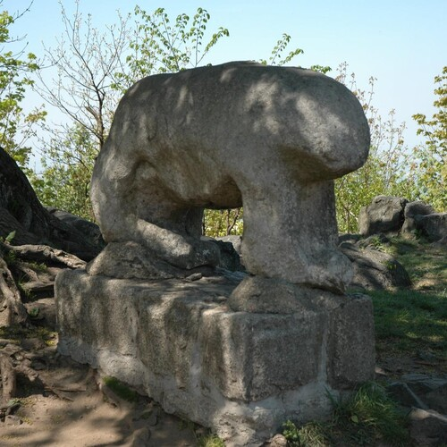

The Ancient Bear On Mount Ślęża

The Ancient Bear On Mount Ślęża
A lonely ancient stone bear,
lives atop the tall[1] and mysterious Mount Ślęża[2].
For three thousand years and probably longer,
it has been seen as a very special place as the mountain is surrounded by flat lands.
Thousands of years ago,
it was a place where people worshiped the sun.
Some ancient artist decided to build a stone bear up there,
and so she stands to this day.
A second bear,
stands guard at the bottom of the mountain.
Oh the stories,
they could tell.
The bear,
is not quite related to the ancient sun worshipers.
It is of Celtic origin, probably the Boii Tribe[3] of the Iron Age
it probably represents the Bear Goddess Artiō.
She sleeps in the winter,
and awakens come spring.
She transform into a bear,
and can ascend to heaven to become a constellation.
Artiō is compared to the Greek Goddess Artemis,
goddess of the wilderness.
And the Roman Goddess Diana, sometimes seen as the Huntress,
Goddess of the Moon and The Underworld.
At the end of third grade,
when school still seemed fun.
The teachers decided to entertain themselves by putting up a play,
which I found pretty scary.
But, somehow I ended up being the bear,
my parents made a bear mask for me.
I was so stressed out,
I forgot to pull it over my face, though I still looked nice.
If I remember correctly, I think I only had one line,
I only remember the second part:
Rarrr,
Rarr...
It is hard to be a simple child,
in a world of mystery, and adventure.
My earliest adventures,
took me on little walks along trail tracks.
I explored spiderweb filled bunkers,
still standing after the war.
Followed well worn grassy paths,
with Budrys, a cheerful and very noble dog.
Mount Ślęża, and Artiō,
were always right there, softly covered in mist and mystery at the horizon.
The Ancient Bear On Mount Ślęża References
[1]: https://en.wikipedia.org/wiki/File:Dom_Turysty_na_%C5%9Al%C4%99%C5%BCy_-_3.jpg
[2]: https://en.wikipedia.org/wiki/%C5%9Al%C4%99%C5%BCa
[3]: https://en.wikipedia.org/wiki/Boii